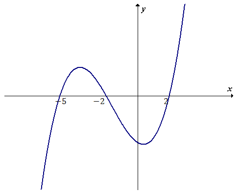
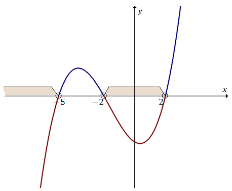

Nierówności wielomianowe drugiego stopnia (czyli tzw. nierówności kwadratowe)
rozwiązujemy metodami opisanymi na
tej stronie.
Metoda rozwiązywania bardziej skomplikowanych nierówności wielomianowych (stopnia \(3\) i wyższych) jest
następująca:
- Przenosimy wszystkie wyrażenia na lewą stronę nierówności, tak aby po prawej stronie zostało
zero.
Od tego momentu lewą stronę nierówności traktujemy jako wzór wielomianu, którego
wykres będziemy chcieli naszkicować.
- Wyznaczamy miejsca zerowe otrzymanego wielomianu.
- Rysujemy wykres wielomianu i odczytujemy z niego rozwiązanie.
Powyższą metodę omówimy teraz na poniższym przykładzie.
Rozwiąż nierówność \(x^3 + 5x^2 \lt 4x + 20\).
Przenosimy
wszystkie wyrazy na lewą stronę: \[x^3 + 5x^2 - 4x - 20 \lt 0\] Lewą stronę naszej nierówności
traktujemy jako wielomian: \[W(x) = x^3 + 5x^2 - 4x - 20\] Teraz musimy wyznaczyć miejsca zerowe
tego wielomianu. W tym celu rozwiązujemy równanie: \[\begin{split} x^3 + 5x^2 - 4x - 20 &=
0\\[6pt] x^2(x + 5) - 4(x + 5) &= 0\\[6pt] (x + 5)(x^2 - 4) &= 0\\[6pt] (x + 5)(x - 2)(x + 2) &=
0\\[6pt] x + 5 = 0 \quad \lor \quad x - 2 = 0 \quad &\lor \quad x + 2 = 0\\[6pt] x = -5 \quad
\lor \quad x = 2 \quad &\lor \quad x = -2 \end{split}\] Mamy już wyliczone miejsca zerowe
wielomianu \(W(x)\). Możemy zatem naszkicować wykres tego wielomianu: 
Wracamy teraz do naszej nierówności i patrzymy na jej znak: \[x^3 + 5x^2 - 4x - 20 \lt 0\] W tej
nierówności występuje znak mniejszości (\(\lt\)), zatem jej rozwiązaniem będzie zbiór tych
wszystkich argumentów \(x\), dla których wykres wielomianu jest poniżej osi \(x\)-ów.
Zaznaczamy na wykresie odpowiednie przedziały:  Rozwiązaniem naszej nierówności jest zbiór: \[x \in (-\infty; -5) \cup (-2; 2)\]